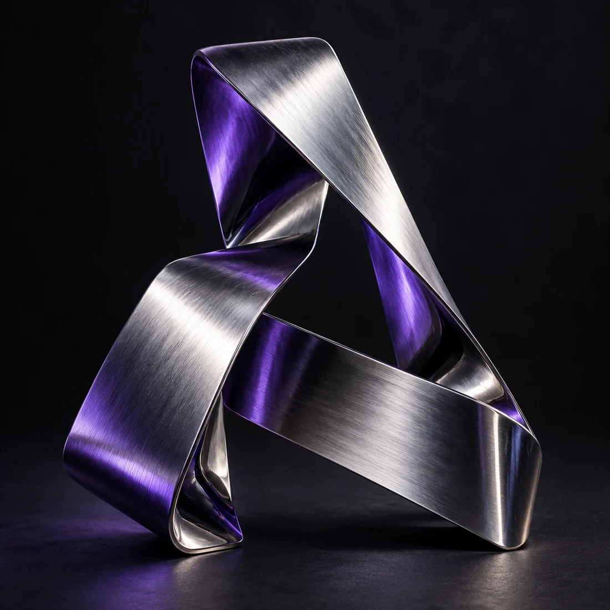

Curiosidade
vira criação.
Desenvolvedor front-end e design, colocando minhas ideias na tela uma descoberta de cada vez.
Explore meus projetos
Da ideia
para a tela.
Projetos de desenvolvimento e minhas primeiras experiências com problemas reais.
R.S. Top Team
Sistema de gestão · Desenvolvimento web
Financeiro, modalidades e áreas para gestor, professor e aluno em um sistema para uma academia local.
MHouse Fit
Site institucional · Interface
Uma página criada para apresentar uma academia local na web, com foco na sua presença digital.
Instagram DM Downloader
JavaScript · Extensão
Extensão para baixar imagens e vídeos recebidos em mensagens diretas do Instagram, com ações rápidas dentro do Instagram Web.
Atlas Gestão
Desenvolvimento Web · SaaS
Sistema de gestão para academias, pensado para organizar a rotina de gestores, professores e alunos.
Antes do código,
veio a curiosidade.
Não preciso aparecer na foto
para colocar um pouco de mim
no
que eu crio.
Sempre gostei de ficar no computador. O design começou na igreja: banners, artes para camisetas e materiais que eu criava no Canva. Depois, o Affinity entrou nessa história.
Um bot. Muitas perguntas.
Queria entender como criar um bot para o Discord. Pesquisando, descobri a programação e comecei a estudar JavaScript.
Voltar também é avançar.
Depois de uma pausa, retomei os estudos com HTML, CSS e JavaScript no Curso em Vídeo, do Gustavo Guanabara.
Aprender fazendo.
Sigo estudando e criando projetos. Também exploro IA como apoio, procurando entender cada solução e reconhecer o que ainda preciso aprender.
Estou no começo da minha trajetória profissional. Os projetos daqui mostram essa construção, não um ponto de chegada.
HTML
Estrutura e semânticaCSS
Layouts em estudoJavaScript
FundamentosFirebase
Prática em projetosCanva + Affinity
Criação visualO design foi
o começo.
Foi criando para a igreja que comecei a olhar para composição, cor e tipografia com mais atenção.
para vestir.
Artes para camisetas.
As camisetas também fizeram parte das criações para a igreja. Uma forma de experimentar o design além das telas.
As peças originais serão adicionadas à seleção.
Aprender.
Repetir.
Comecei com o que tinha.
Aprendi a criar no Canva para ajudar com os materiais da igreja. Com o tempo, explorei o Affinity e continuei estudando. Essa prática veio antes da programação e continua fazendo parte do meu caminho.